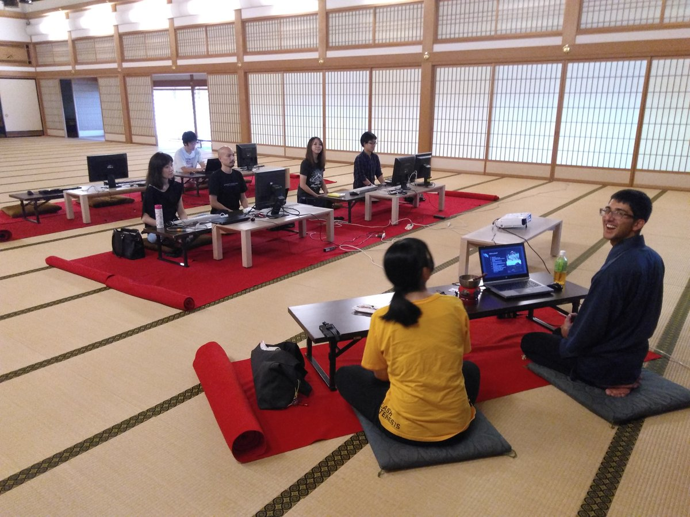
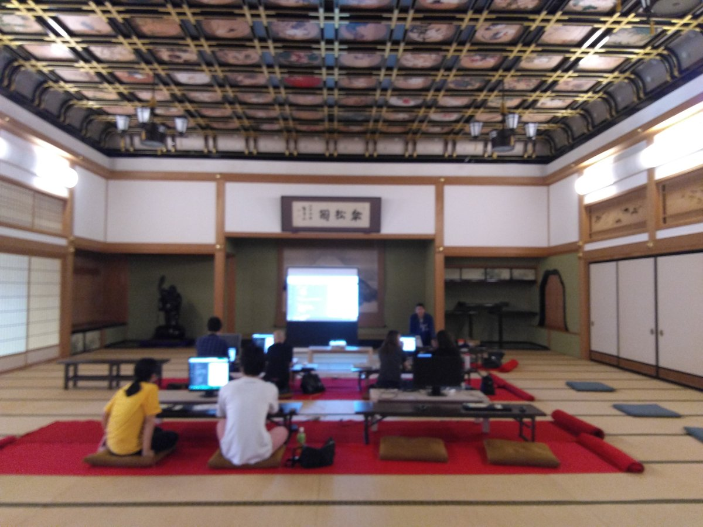
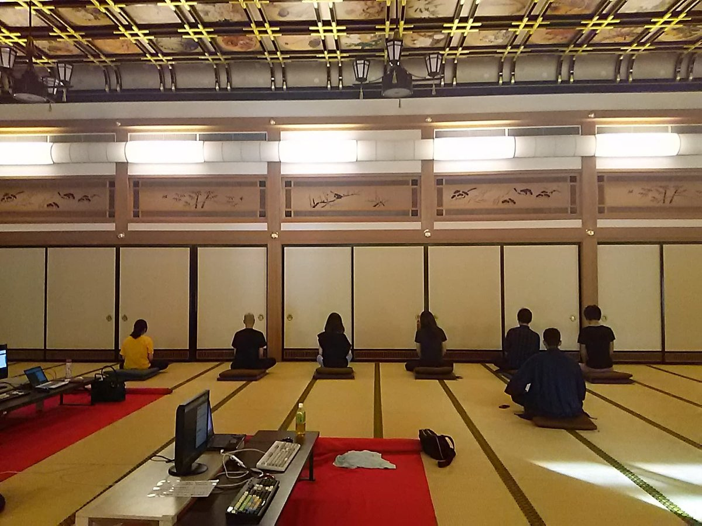
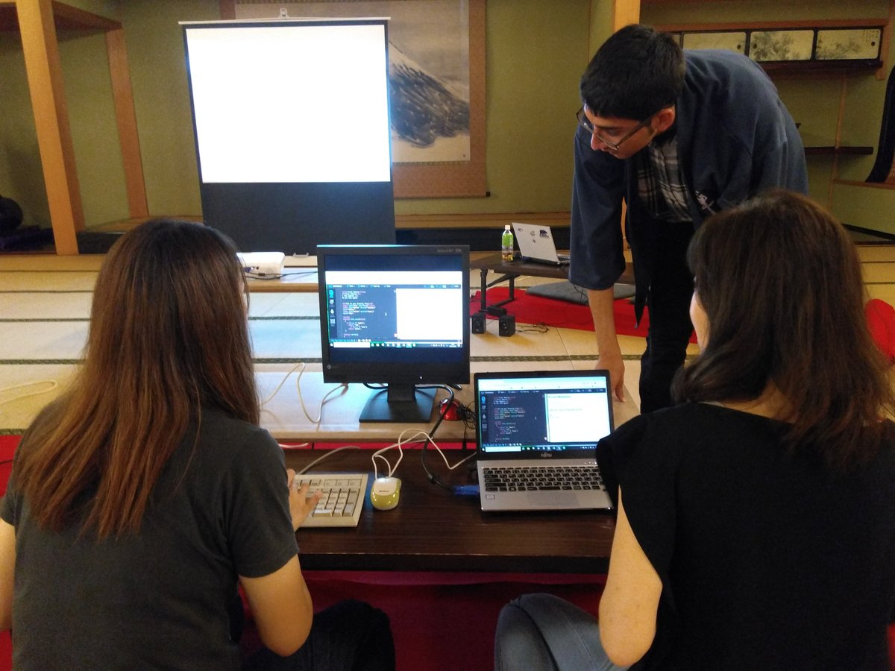
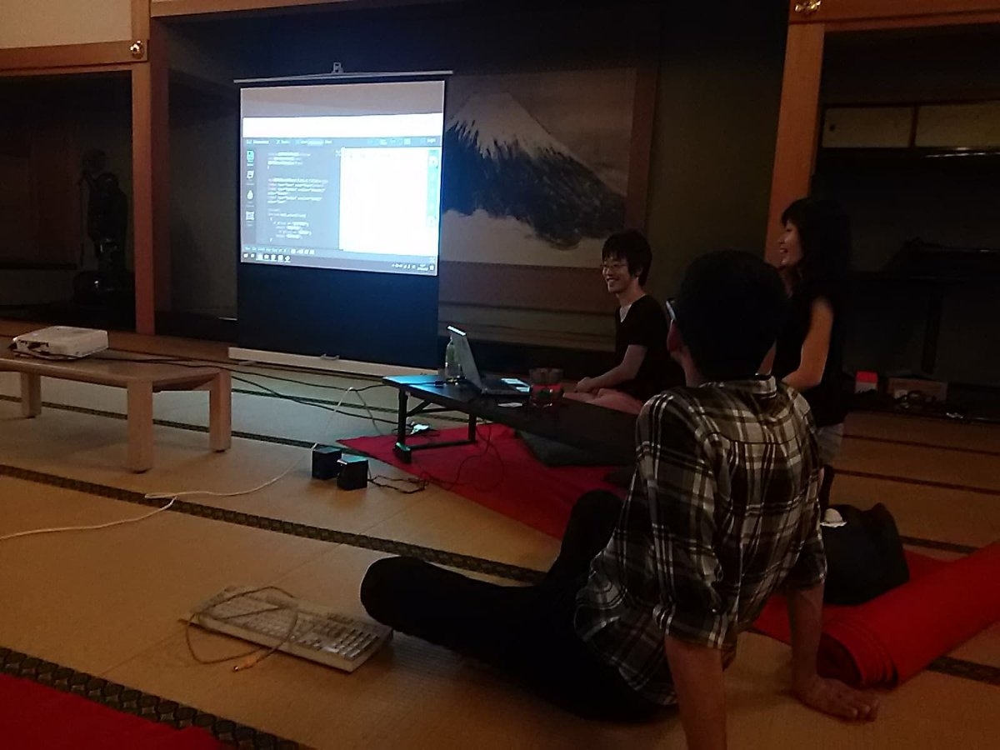
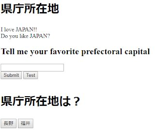
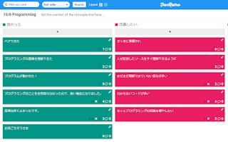

ZenIT - Build Your HTML/JavaScript Website for Beginners
Today, we worked on building a basic website using pair programming and Zen meditation!
今日は簡単なウェブサイトをペアプログラミングと坐禅で作りました！

We started off with a presentation about ZenIT and the cutting-edge extreme programming style from Silicon Valley.
最初はZenITとシリコンバレーの最先端のExtreme Programming作法について発表しました。

After this, we watched an official video on how to do Zazen meditation, followed by 5 minutes of actually doing it!
その後は曹洞宗の坐禅作法の公式なビデオを見てから5分間ほど坐禅しました。

Then, we dug into the basics of HTML/JavaScript with a high school student helping me out to explain it!
その後はHTMLとJavaScriptの基盤に入って、高校生の参加者の手伝いでみんなに説明しました！

After this, we split into teams and did pair programming to work on our own creative websites.
次は、チームに分けてペアプログラミングでクリエイティブにウェブサイトを作りました

Of course, we did Zazen meditation again during our breaks. And, after about 20 minutes, we swapped pairs, worked a bit more and each team presented its product!
もちろん、休憩中は坐禅もやってて、20分間立っったらペアもシャッフルして、もうちょっと働いてて、各チームが発表しました。


Here are the projects! みんなのプロジェクト！
https://code4eiheiji.github.io/20181006/index.html
To finish off, we had a retrospective meeting, discussing what went well and not so well! Constant improvement!
最後にRetroの会議で、当日によかったことと改善したいとこを議論しました。通常進化の元！

It was a super fun day and almost everyone wanted to keep learning more programming.
Let's create a place where people can learn programming in a happy, peaceful way, and also get some work done!
すごく楽しい3時間で、ほぼ皆さんはもっとプログラミングを学びたいと！
心豊かなやり方でプログラミングを学んだりいい仕事ができる場所をこれから作りましょう！